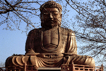
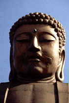
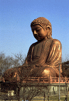
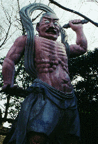
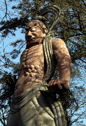
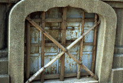
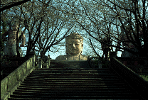
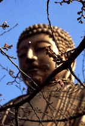

聚楽園大仏/愛知県東海市

 
名古屋の南にある東海市。「鉄と洋ランの街」というキャッチフレーズ通り市内沿岸部には無数の煙突が立ち並ぶ工業地帯だ。その煙突を見下ろすように高台に鎮座しているのが、聚楽園大仏である。
この大仏さん、鉄骨鉄筋コンクリート造の阿弥陀如来像、高さは18.8メートル。昭和60年に改装され、銅色にペイントされた現在は市指定の文化財にもなっている。
お誕生日は昭和2年5月21日。着工は大正13年。たしか東京の同潤会アパートの第1号（つまり東京初の本格的高層鉄筋コンクリート建築）の完成が大正14年だったのと比べてもこの大仏さん、本邦最古の胎内空間を持つコンクリート製大仏だったのではないか、と考えられる。
つくったのは山田才吉という当時名古屋でブイブイいわせていた名物男。
つけもの屋を振り出しに県下初の缶詰製造販売業（これが日露戦争にぶちあたり大ブレイク）、中京新報創刊などなどで財界の中枢人物となり、県会議員にまで登りつめた、ある意味、典型的な明治の成功者であるこのお方、調べていくとなかなか興味深い人物なのだ。
この山田翁が名物男といわれる由縁はふたつ。一つは抽選会や出開帳などを次々と開催し、人を集めるイベントプロデューサーとしての手腕の高さと奇抜さ、そしてもう一つは建築道楽だ。
この建築道楽っぷりが気持ちいい。400畳敷きの大広間をもつという御殿造りの東陽館、名古屋教育水族館、五階建ての南陽館そして北陽館、などなど。そんな道楽建築の極みが聚楽園大仏だったのだ。
しかし東陽館が火災で、南陽館が台風で崩壊してしまう。そこで当時としては最先端の技術である鉄筋コンクリート工法を駆使して大仏さんが誕生したのである。
この大仏さんがつくられたのは昭和天皇御成婚記念というのが表向きの理由。しかしたぶん建て前。敬虔な仏教徒だったから、というのも半分建て前。聚楽園の観光の目玉、という辺りが本音であろう。
少し以外かもしれないが、江戸末期から明治にかけて「大仏」というものは人寄せを目的とした仮設の「見世物」の一種であったのだ。つまり大仏とは芝居小屋やお化け屋敷と同義のものだったのだ。もっともその頃、見世物としてつくられた「大仏」は木組みに紙を張り付けたハリボテだったのだが、それでも胎内巡りをセットとした現代の大観音などの雛型はこの頃すでに完成していたのだ。
実際、聚楽園の大仏が出来た当時も、周辺には旅館や料亭などが建ち客足が絶えなかったという。人々は大仏の胎内を見物し、季節の花や眼下の景色やボート遊びなどを楽しんだのであろう。灯台代わりに眉間から電灯が灯されていたということであるから夜間などはさぞ見物であったろう。
それにしてもこの仮設的な見世物小屋の一種であった大仏をこの時期にコンクリートでつくりあげてしまった意義は大きい。
聚楽園大仏の完成により、仮設の小屋として一過性のブームとして消えかけていた「大仏」というジャンルが当時の最新テクノロジーを以って恒久性を得、現代の大観音建設ラッシュにまで脈々とその歴史が重ねられるようになったのだ。ついでにその「見世物」的な要素もまんま引きずって。


昔話はこれくらいにして現在の聚楽園大仏の話をしよう。現在、この聚楽園には料理屋や旅館などは見当たらず、なんか味も素っけも無い、いかにも役所がつくったような公園になっており、その一画に白眼剥いた不気味な仁王像に守られ大仏さんが鎮座しているんだけど、何と蓮華座後部にある胎内入口がこれでもか、という位に思いっきり塞がれてしまっている。


これ、実は大仏さんの管轄が近在の寺に移り、その際「仏の尻から入るとはけしからん」との理由から封鎖されてしまったとの事。
ちなみにかつて中に入った方の話によると左右に階段があり仏画や仏像が展示してあったそうだ。
今はその眉間にはまっているガラスの白眉を見て当時を偲ぶくらいなのが何とも寂しい限りだ。
創設者の山田翁のコンセプトでもある「見世物としての大仏」というものをこよなく愛する私のような好き者の存在を汲んで頂き、大仏の内部を是非再公開して頂きたいものである。

情報提供はＮａｏｋｉさんです
参照ページ
ＮａｏｋｉさんのＨＰ
「聚楽園大仏」
1999.3.
珍寺大道場 HOME